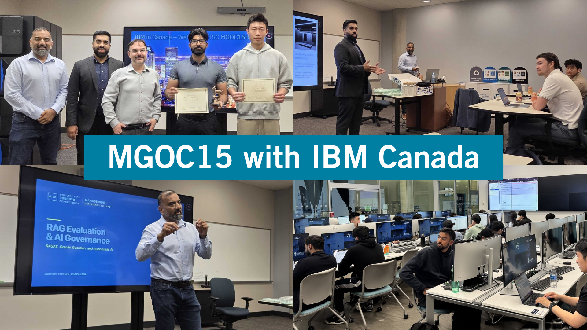

We need your help
Management Advisory Board · October 2026
AI specialists &
Help us shape how Management students learn, apply AI and connect with employers.
What employers need
What capabilities should our graduates bring?
What we should build next
Where can we offer something distinctive?
30 seconds. We need your help on AI specialists and future program development. We will look briefly at the existing AI education landscape, show how we can build on our industry connections, and walk through a proposed student journey. We would value your advice on the capabilities employers need and where UTSC Management can offer something distinctive. This opening is included within the ten-minute total; keep the student journey to 2 minutes 30 seconds and retain 2 minutes 30 seconds for board feedback.
AI programs in Toronto and Ontario
AI & Machine Learning Undergraduate Master of Management in AI Master’s Artificial Intelligence Graduate certificate Artificial Intelligence Continuing education Applied Computing · AI Master’s Master of Management in AI Master’s AI Design & Development Master’s AI Analysis, Design & Implementation Graduate certificate Advanced Artificial Intelligence Continuing education AI for Data Continuing education Data Science & AI Master’s Data Analytics · AI Master’s ← 1–4 of 12 programs → Selected Ontario offerings · Click a program
↖ Select a program
Its details will appear here.
1 minute. Ontario already offers undergraduate streams, master’s degrees and certificates. These serve different learners, and several include industry experience. Our question is how to build an AI pathway for current and prospective UTSC Management students. Optionally select Schulich for up to 20 seconds. All twelve programs are accessible through the selector on this slide. The right-hand panel holds the supporting details and sources.
Our industry connections

MGOC15 · Business Data Analytics
12months
of paid work experience in Management co-op
Industry in the classroom
Management co-op overview
1 minute 30 seconds. Our co-op relationships are a foundation for bringing industry further into students’ learning. The existing MGOC15 course was co-developed and co-taught with IBM practitioners and included learning on campus and at IBM Canada. The photographs show a concrete example. What would it look like if this kind of engagement extended across several courses? No additional click is needed.
The next step in business education
Management expertise Business problems & decisions Partners Technical foundations Industry partnerships Co-developed experiences WIL Work-integrated learning Reimagine recruitment Courses, events & more Proposed program Our AI certificate Management alongside
A distinctive learning experience Bring our strengths together to develop new programs. The AI certificate is one proposed starting point.
Click an element to see its contribution.
Management expertise Start with business problems and decisions. Connect analytical methods, responsible AI and communication to management practice.
Partners Explore collaboration with Computer Science and other departments, providing technical foundations in software and hardware for business applications.
Industry partnerships Co-develop courses and activities with industry partners, bringing practical experiences into all courses. Build on examples such as MGOC15 with IBM.
Work-integrated learning Connect classroom projects, practitioner feedback and co-op experience so students can apply and demonstrate what they learn.
Reimagine recruitment Invite hiring organizations to hackathons, events, sample classes and student demonstrations to see our students’ skills in practice.
A distinctive learning experience Bring our strengths together to develop new programs. The AI certificate is one proposed starting point.
1 minute, including one optional click. Our Management expertise, work-integrated learning and industry relationships can support a distinctive next step in business education. The proposed AI certificate is one starting point, developed alongside Computer Science. Follow the connections: business questions and technical foundations meet practitioner involvement and applied experience. Recruitment makes students’ skills and learning experiences visible to hiring organizations. Click either Partners or Reimagine recruitment for a brief explanation; all elements remain available for later exploration. Partners could include Computer Science and other departments, providing foundations in software and hardware. Industry collaboration includes co-developed courses and activities across all courses. Recruitment invites hiring organizations into courses, hackathons and events. Curriculum design with these partners is presented as a proposal. Transition to the student journey to show what the certificate journey could look like. Keep the overall presentation and discussion within ten minutes.
AI certificate: a student journey
01 Foundations Business problems
Data literacy
Responsible AI
A shared starting point
02 Learn with industry G GoogleAgentic AI Gemini ✦ Agents & automation Copilot Studio SAS Analytics & decisions SAS Viya Click a course to see an example
03 Apply & test Illustrative recruiter event
Meet potential recruiters
Hackathons · showcases
04 Join a company From classroom
Bring skills into a team
Build a foundation in business, data and responsible AI.
Proposed pathway · Illustrative partners and tools · Employment is the intended outcome.
2 minutes 30 seconds. Follow one Management student from left to right. The animation runs once on entry; pause it to discuss a stage, select a stage directly, or replay. Spend 30 seconds on foundational courses in business problems, data literacy and responsible AI. Spend 60 seconds on the three illustrative industry course experiences: Google Gemini for Agentic AI; Microsoft Copilot Studio and Power Automate for agents and automation; SAS Viya for analytics and decisions. An optional course click shows an assignment and links to the official tool pages. Spend 30 seconds on Apply & test: students demonstrate work at hackathons and showcases, receive feedback and interact with potential recruiters. Finish with 30 seconds on the intended outcome: moving directly into a company and applying these skills in a team. This is a proposed pathway, with partner participation, academic requirements and employment outcomes to be developed. The recruiter-event image is AI-generated and depicts fictional people. Reach the board question by elapsed minute 7.
Advice from the board
Would this pathway help attract Management students and prepare graduates you would want to hire?
What capability would you most want students to demonstrate?
Do you see value in this concept from a hiring/recruitment perspective?
What else could we consider to make the graduates more future ready?
2 minutes 30 seconds for feedback, followed by a short closing sentence within the overall ten-minute limit. Show the four numbered questions and invite two brief responses to whichever questions resonate most. Use the prompts to focus discussion rather than asking for a separate round of answers to every question. Close: Your feedback will help us choose the capabilities and partner involvement to test in a pilot. The program directory and course details remain available at the link. There is no shared poll or response collection.
Close ×
Carleton University
Artificial Intelligence and Machine Learning Ottawa
AI and machine learning within a computer science degree, including neural networks and language and vision applications.
Industry experience A co-op option is available.
More program information
Credential Bachelor of Computer Science stream
Learner Undergraduate computer science students An undergraduate pathway with technical depth and optional work experience.
Official program page ↗
York University, Schulich School of Business
Master of Management in Artificial Intelligence Toronto, Keele Campus · 12 months, full-time · In person
Technical AI foundations alongside business applications and ethical considerations.
Industry experience An AI consulting project asks students to work on a client organization’s business problem.
More program information
Credential Master’s degree
Learner Graduates seeking to combine management with applied AI A business-focused benchmark that already includes direct industry engagement.
Official program page ↗
Seneca Polytechnic
Artificial Intelligence Toronto, Newnham Campus · 2 semesters / 8 months · Hybrid
Applied machine learning, cloud technology, visualization and generative AI.
Industry experience An optional work term offers industry exposure. It is separate from the academic semesters.
More program information
Credential Ontario College Graduate Certificate
Learner Learners with computer science, programming or software development backgrounds A short applied pathway building on prior technical preparation.
Official program page ↗
University of Toronto, School of Continuing Studies
Artificial Intelligence Toronto-based provider
A certificate introducing AI applications and opportunities. Consult the current catalog for course requirements and delivery.
More program information
Credential Continuing education certificate
Learner Learners developing their understanding of AI and its applications A professional-learning comparator with a different audience and credential structure from a Management degree pathway.
Additional official context ↗
Official program page ↗
University of Toronto
Applied Computing: Artificial Intelligence concentration Toronto
Advanced AI study and applied research training.
Industry experience Includes an eight-month industrial internship evaluated through academic and industry supervision.
More program information
Credential MScAC concentration
Learner Graduates with strong preparation in AI and quantitative study A technical graduate benchmark combining advanced coursework and substantial industry experience.
Official program page ↗
Queen’s University, Smith School of Business
Master of Management in Artificial Intelligence SmithToronto / HyFlex · 12 months · In person or live online through HyFlex
AI fluency, business value, responsible adoption and organizational implementation.
More program information
Credential Master’s degree
Learner Working professionals interested in AI and management An example of AI and management education designed to accommodate employment.
Additional official context ↗
Official program page ↗
Seneca Polytechnic
Master of Artificial Intelligence Design & Development Toronto, Newnham Campus · Hybrid
Machine learning, natural language processing, computer vision and AI ethics.
More program information
Credential Master’s degree
Learner Learners pursuing advanced applied AI design and development An applied AI master’s offering. Seneca reported welcoming its first cohort in January 2026.
Additional official context ↗
Official program page ↗
Durham College
Artificial Intelligence Analysis, Design & Implementation Durham Region
AI systems, machine learning, language processing and the analysis of business data.
Industry experience Capstone projects and access to the AI Hub support applied work, including collaboration with industry partners.
More program information
Credential Graduate certificate
Learner Learners developing applied AI implementation skills An applied certificate with an existing connection to business problems and industry.
Official program page ↗
University of Toronto, School of Continuing Studies
Advanced Artificial Intelligence Toronto-based provider
An advanced AI certificate listed in the school’s catalog. Consult the current catalog for course requirements and delivery.
More program information
Credential Continuing education certificate
Learner Learners seeking advanced AI study A distinct advanced offering within continuing education.
Additional official context ↗
Official program page ↗
Toronto Metropolitan University, The Chang School
AI for Data Toronto-based provider
Effective and ethical use of AI tools to manage, analyze and interpret data in workplace scenarios.
More program information
Credential Microcertificate
Learner Learners demonstrating workplace AI and data skills A focused example of demonstrating practical skills through a smaller credential.
Official program page ↗
University of Waterloo
Master of Data Science and Artificial Intelligence, co-op Waterloo · 16 months, full-time · On campus
Advanced data science and artificial intelligence in a professional coursework program.
Industry experience The full-time program includes co-operative education.
More program information
Credential Master’s degree, co-op
Learner Graduates pursuing advanced data science and AI study An existing integration of advanced study and work experience.
Official program page ↗
Western University
Master of Data Analytics, Artificial Intelligence field London
AI specialty courses alongside the data analytics core, plus an Ethics in AI seminar.
More program information
Credential Field within the Master of Data Analytics
Learner Learners pursuing data analytics with an AI focus An AI field within a broader analytics degree, rather than a separate AI credential.
Official program page ↗
Example partner: Google
Agentic AI with Gemini Illustrative course area. Google participation in this certificate is proposed.
Tools Google Gemini
Learning objective Design an AI agent that breaks a business task into steps, uses tools and checks its results.
Example student assignment Build a Gemini-based agent that gathers information from a supplied business dataset, compares options and drafts a recommendation. Test its tool choices and require human approval before any action.
Practitioner involvement A practitioner could propose a business task and review the agent’s decisions and performance.
Learning across technologies Compare how planning, tool use and evaluation carry across different agent platforms.
Official tool information: Gemini tool use and function calling
Example partner: Microsoft
AI agents and workflow automation Illustrative course area. Microsoft participation in this certificate is proposed.
Tools Microsoft Copilot Studio · Power Automate
Learning objective Design a workflow that uses AI with explicit operating limits and appropriate human oversight.
Example student assignment Prototype a service-request workflow. Test routine cases and failures, and identify the points that require human review.
Practitioner involvement A practitioner could co-teach an applied session and review the workflow design.
Learning across technologies Explain which design principles remain useful when the platform or automation tool changes.
Official tool information: Microsoft Copilot Studio · Power Automate
Example partner: SAS
Predictive analytics and decision support Illustrative course area. SAS participation in this certificate is proposed.
Tools SAS Viya
Learning objective Connect a validated model to a management decision and explain the limits of the evidence.
Example student assignment Build and validate a prediction model, then recommend a decision rule and explain its likely tradeoffs.
Practitioner involvement A practitioner could contribute a business case and review the interpretation of results.
Learning across technologies Compare a predictive model with a simpler baseline before choosing a more complex solution.
Official tool information: SAS Viya